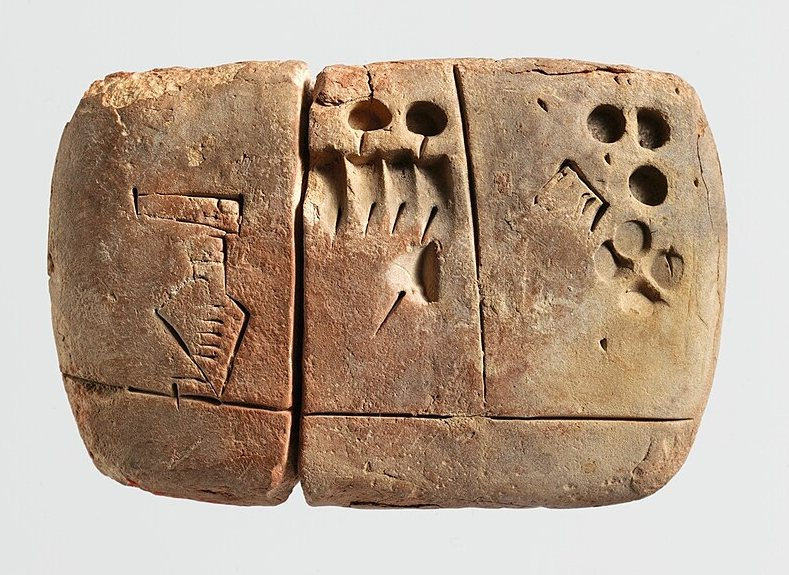
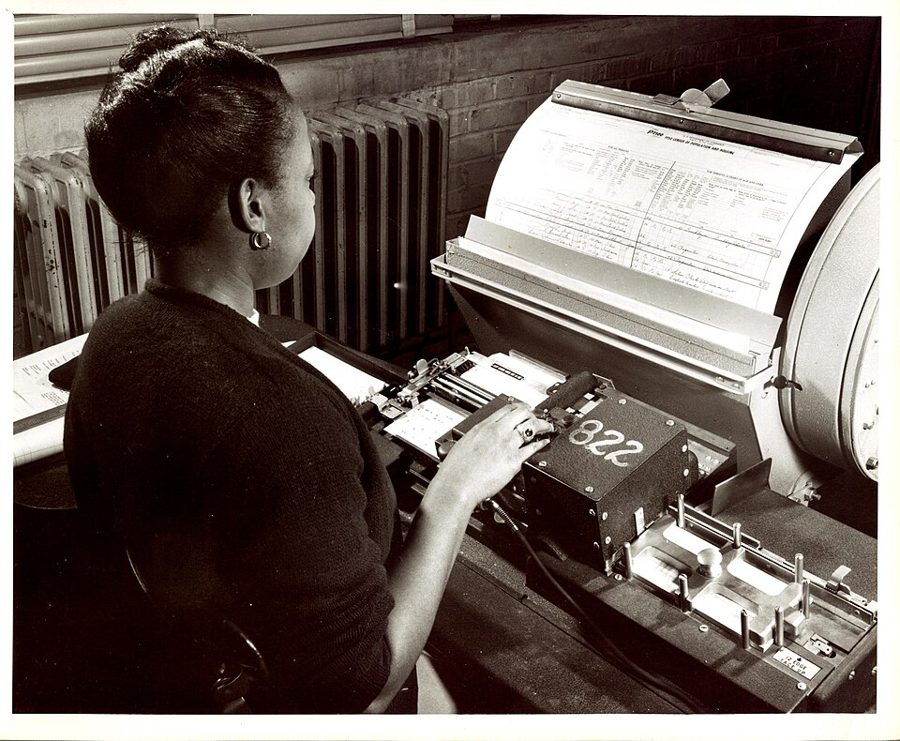

Key points
- Writing itself began partly as accounting. For 5,000 years, every big change in reporting has changed three things: who could produce the numbers, how fast, and who could see them.
- Double entry was the first great control: every transaction recorded twice, so the books check themselves. That logic still sits under every ERP and every AI tool.
- We are moving from reports that are built once and refreshed, to reports created on request, and then to insights delivered without a report at all.
- Keep the foundations: the ledger, the data model, the metric definitions and the controls. Many static reports can go. Human judgement and accountability cannot.
Finance teams spend a large part of their week producing reports, and many of those reports are read for a few minutes, if at all. Before asking what AI will do to that work, it helps to look at how we got here. Financial reporting is one of the oldest information technologies there is. Each new tool solved a real problem, and each one left habits behind that outlived the problem.
Exhibit 1
Five thousand years of financial reporting
Seven milestones that changed financial reporting, and what comes next.
- c. 3100 BCCountingWriting starts as accounting
Scribes in Sumer record rations of barley and beer on clay tablets.
- 1494Double entryPacioli's Summa
The first printed explanation of double entry, published in Venice.
- 1844Reporting to ownersUK Joint Stock Companies Act
Registered companies must present a balance sheet to their shareholders.
- 1890MachinesPunched cards
Hollerith tabulators process the US census, and later run corporate accounting for decades.
- 1985SpreadsheetsMicrosoft Excel
Finance gets its own computer, and its universal tool.
- 1992–2015ERP and BIOne ledger, many dashboards
SAP R/3 brings an integrated ledger in 1992. Power BI puts dashboards on every desk in 2015.
- 2024AIReports from a prompt
Tools such as Claude Artifacts build working, interactive reports from a plain-English request.
- NextThe futureInsights without a report
Describe what you need and the analysis is built on request. Later, the key insights and next steps arrive without opening a report at all.
The age of counting: writing begins as accounting
Long before anyone wrote stories, people kept score. Farmers in the Near East used small clay tokens to count grain and animals, and by around 3100 BC scribes in Sumer were pressing records of rations into clay tablets. Many of the oldest surviving examples of writing are exactly that: who received how much barley, beer or labour, and when.

These records had one job: to show what was owed and to whom. They were a single list, kept by whoever controlled the store. There was no way to check one record against another, and no idea yet of profit, only of quantities.
Double entry: the first great control
The breakthrough came in the trading cities of medieval Italy. Florentine merchant accounts from 1299–1300 are among the earliest known to match modern double-entry practice, and a treasury ledger from Genoa in 1340 was long cited as the first. In 1494 the Franciscan friar Luca Pacioli published the first printed explanation of the method in his Summa de arithmetica. He did not invent it, as he made clear himself: he described what Venetian merchants were already doing.
Double entry works in two dimensions. Every transaction is recorded twice, as a debit and a credit, so the books must always balance. That simple rule did three things at once. It made errors visible, because a mistake breaks the balance. It made a business measurable as a whole, because assets always equal liabilities plus the owners' capital. And it separated the business from its owner, which is the idea that makes companies possible.
The next step was reporting to outsiders. Once the Dutch East India Company's shares began trading in Amsterdam in the early 1600s, owners and managers were different people, and owners needed numbers they could trust. Over the following centuries that need turned into law and into a profession. In Britain, the Joint Stock Companies Act of 1844 required registered companies to present a balance sheet to shareholders, and in 1854 the Society of Accountants in Edinburgh became the first chartered body of accountants.
Machines and paper: faster records, slow reports
The industrial age brought scale, and scale needed machines. Herman Hollerith's punched-card tabulators processed the 1890 US census, and punched cards went on to run payroll and ledgers for most of the 20th century. In 1954 General Electric ran its payroll on a UNIVAC I, one of the first business uses of a computer.

Regulation grew alongside. After the 1929 crash, the US Securities Exchange Act of 1934 created the SEC and required listed companies to file periodic reports. Recording became faster, but reporting stayed slow. The month-end report was still a paper document, assembled by hand, reviewed in meetings and filed away. Getting a different view of the numbers meant asking the data processing department and waiting.
The spreadsheet: finance gets its own computer
VisiCalc arrived in 1979, Lotus 1-2-3 in 1983 and Microsoft Excel in 1985. For the first time, finance people could build their own models and reports without asking anyone. The spreadsheet became the universal language of finance, and it still is.
It also brought new risks. Spreadsheets are easy to build and hard to control. Formulas break, links point to the wrong file, and copied numbers go stale. JPMorgan's 2013 internal review of its "London Whale" trading losses, for example, found that a key risk model relied on spreadsheets that required manual copying and pasting of data. Every finance team has its own smaller version of that story.
ERP and dashboards: one ledger, many reports
From the 1990s, ERP systems such as SAP R/3 brought the whole business onto one integrated ledger. Sales, purchasing, inventory and finance finally shared the same data. Regulation followed the technology. The Sarbanes-Oxley Act of 2002 made management accountable for internal control over financial reporting, listed EU groups moved to IFRS in 2005, and filings became machine-readable, with XBRL at the SEC from 2009 and Europe's ESEF from 2020.
Business intelligence tools then put the data in front of everyone. When Power BI became generally available in 2015, any finance team could build interactive dashboards on top of the ledger. That was a real advance, but it created a new problem: report sprawl. Many companies now have hundreds of dashboards, each built for one question at one moment, maintained long after anyone stopped reading them.
The AI age: reports built on request
Generative AI changes the unit of work. Instead of building a report and refreshing it, you describe what you want and the report is built for you. When Anthropic introduced Artifacts in June 2024, a plain-English request could produce a working, interactive report in minutes. The AI Profitability Dashboard on this site was built that way: I defined the finance logic, and Claude did most of the building.
This makes tailor-made reporting realistic for the first time. A country manager, a buyer and a board member can each get a view designed for their question, instead of all reading the same pack and hunting for the page that matters to them.
Exhibit 2
Each age changed who did the work, how fast, and who could see the result
The ages of financial reporting compared.
| Age | Medium | What a report was | Who did the work | Who could see it |
|---|---|---|---|---|
| Counting to c. 1300 | Tokens, tablets, scrolls | A list of what is owed | Scribes | The ruler or the temple |
| Double entry 1300–1890 | Paper ledgers | A balance sheet and an account of profit | Bookkeepers, later accountants | Owners, then shareholders |
| Machines 1890–1979 | Punched cards, mainframes, paper | A printed monthly pack | Clerks and data processing departments | Management and regulators |
| Spreadsheets 1979 onwards | Excel on every desk | A model anyone could change | Every analyst | Whoever received the file |
| ERP and BI 1990s onwards | One ledger, many dashboards | A dashboard, refreshed daily | Systems and BI teams | Anyone with a login |
| AI 2023 onwards | Language models on governed data | An answer built for one question | The person asking, with an AI | Anyone who can ask a question |
Where we go from here
I see three horizons. They will overlap for years, and most companies will run all three at once.
Exhibit 3
From reports, to requests, to insights
Three horizons for financial reporting, and the human role in each.
Today
Report-centred
You: open a fixed dashboard and look for the answer.
The system: refreshes the same views every day.
People own: building and maintaining every report.
Next
Request-centred
You: describe what you want to see and why.
The system: builds the report on certified data and definitions.
People own: the definitions, the controls and the judgement.
Later
Insight-centred
You: receive what changed, what it means and what to do next.
The system: watches the numbers and flags what matters.
People own: the decision, and the accountability for it.
Horizon 2: request-centred reporting. Instead of refreshing an existing report, you describe what you need: "Show me why variable margin in Germany fell against forecast, by brand, and what happens if the price increase lands a month late." The report is built, used and discarded. The cost of a new view falls to almost nothing, so the value of a standing dashboard falls too.
Horizon 3: insight-centred reporting. Further out, many people will not open a report at all. An AI that monitors the ledger, the forecast and the market will tell them what changed, what it means and what the options are. The report becomes the evidence behind the insight, there if you want to check it, rather than the thing you read first.
Should we keep our existing reporting tools?
Yes and no. A report built on request is only as good as the data and definitions underneath it. If "net revenue" means three different things in three systems, an AI will produce three confident and different answers. So the foundations matter more than ever:
- Keep the ledger, the data model, the certified metric definitions and the access controls. They become the governed layer every request draws from.
- Keep fixed formats where comparability is the point: statutory accounts, board packs and covenant reporting.
- Retire the long tail of static dashboards built for one question that nobody asks any more.
- Add an audit trail for AI-built reports: what was asked, which data was used, and who reviewed the result.
The human role does not disappear
Every age of reporting moved work from people to tools, and every age kept people accountable for the numbers. The AI age is no different. The work shifts from building reports to asking good questions, defining what the numbers mean, checking that the answer makes sense and deciding what to do. Those are exactly the parts of finance that require experience, independence and ethics, and they are the parts that a CFO signs for.
Pacioli's ledgers balanced because every entry had a matching entry. The equivalent discipline for AI reporting is that every insight should have matching evidence, and a person who stands behind it.
Where to start
- Count your reports and find out which are actually used. Most teams find a long tail that can go.
- Write down your core metric definitions, and make one system the single source for each.
- Pilot request-built reporting on governed data for one recurring question, such as a monthly margin review.
- Set rules for AI-built reports: approved data sources, review before distribution, and a record of what was asked.
- Train the team in asking questions and checking answers, not only in building dashboards.
Images: The Metropolitan Museum of Art (CC0), and public-domain works via Wikimedia Commons, as credited under each image. Dates are from widely cited histories of accounting; see the sources below.
Newer: Cash is reality: working capital, the cost of waiting, and where profit should goOlder: A starter prompt kit for finance teams